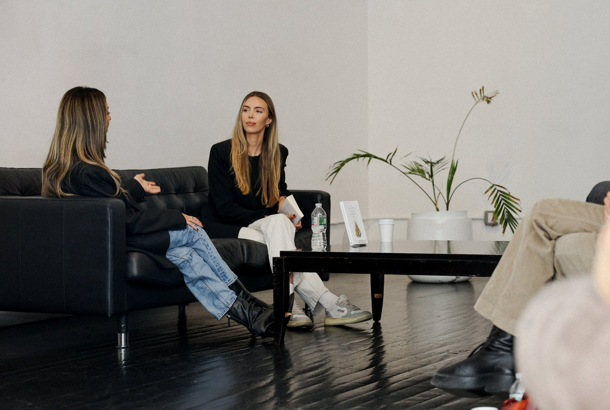
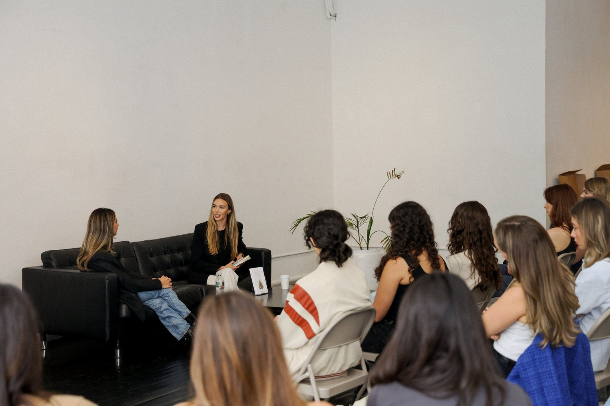
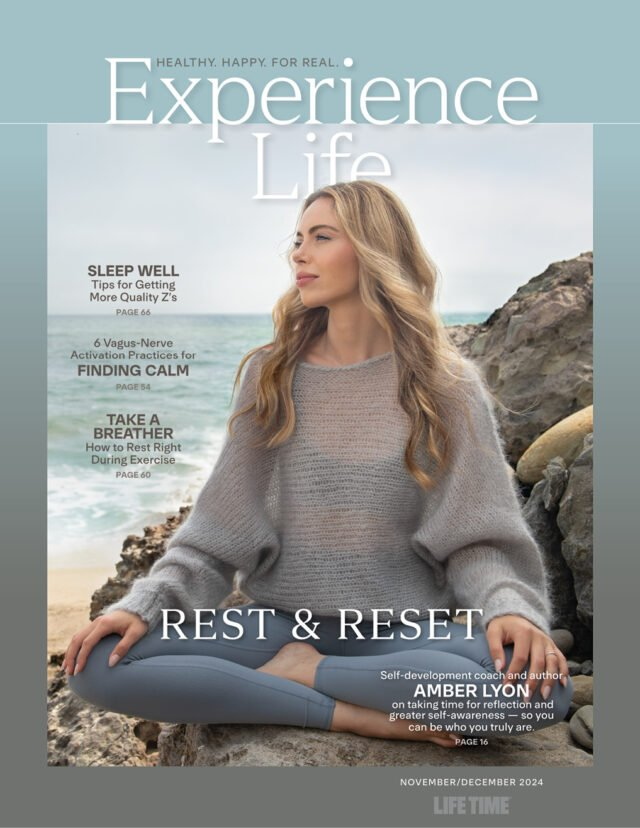

An 8-week cohort built around the seven pillars of the Magnetic Method. Live weekly with Amber. For the woman who already knows the methodology and wants to move it from the page into the body, with a group of women doing the same work alongside her.
Apply For The Cohort
Amber Lyon · Modern Mind
"Where the book becomes the work."
Custom 4-min VSL · filmed Day One of install
Custom VSL preview · the live cohort hero video films during Phase 1 of the install. Soft-feminine register, single-take, B-roll of notebook + window light + the book on the desk.
You read You Are a Magnet, sat with it for a week, and then went looking for what comes next. The cohort is the version where the principles get installed in real time, with a group of women holding the work alongside you.
You're already in the Portal and you've been working the pillars on your own. The cohort is the live container - 8 weeks, weekly calls with Amber, the same pillars walked through together with women in the same season as you.
The Executive Coaching list closed. You raised your hand. The cohort is the productised group version of that work - same depth, same teacher, group format. Two intakes a year, 20-40 seats per cohort.
No fluff. No vision-boarding. The cohort is built around installable pillar work and the integration that happens when a group of women hold the same conversation week after week.
By the end of week 2, the body has a baseline rhythm. The nervous system has a name for what it's doing on Sunday nights.
Week one is the body before the thought. Week two is the rhythm the nervous system runs through your week. Together they install the foundation everything else stands on. Without ROOT and FLOW, the rest of the pillars don't hold.
By the end of week 4, you've named the difference between assertion and over-functioning, and you've started building self-trust as a daily pattern.
POWER is the difference between assertion and over-functioning - most women confuse the two. SELF is self-trust as the asset most women under-build. The cohort moves from naming the pattern to installing it in week 4.
By the end of week 6, the receiver layer is open. What gets said and what doesn't is conscious, not reflexive.
HEART is the receiver layer. VOICE is what gets said and what doesn't. Most women run reflexive scripts in both. The cohort makes them conscious. The shift in week 5-6 is usually the one that surprises people.
By the end of week 8, the future self the body is already aware of has a name. The pillars stand together, not as a list but as a structure.
VISION is the future self the body is already aware of. Integration is the pillars together, in the room with each other. Week 8 is the cohort closing, the workbook bound, the work yours.
Live group calls weekly with Amber. Private cohort chat for the duration. Tailored reflection worksheets per pillar. The cohort sits above The Portal subscription and below the rare 1-to-1 slots that open between intakes.


"You Are a Magnet" · June 2024
Author of "You Are a Magnet: Guiding Principles for a Magnetic and Joyful Life," released June 2024 with a foreword reference from NYT bestselling author Yung Pueblo. Founder of Modern Mind, the Portal membership, and the Self FM / RADIATE meditation app. Eight years of one-to-one coaching work with women rebuilding self-worth and nervous-system capacity. Featured in Modern, Grazia, Lifetime Magazine, Remix, Gritty Pretty, and Dandy Wellness.
You don't need more inspiration. You need the pattern under the thought to change, and a group of women holding the work with you while it does.
Below are reflections from prior clients - the women who've already walked the work in 1-to-1 and small-group format. Cohort-specific receipts swap in after the first cohort completes.
Verbatim client reflections from prior 1-to-1 work. Cohort-specific testimonials swap in after the first 8-week cohort completes.
The Portal is the self-paced membership - lifetime or monthly access to seven signature courses, the monthly coaching podcast, and the private community chat. The Cohort is the live container. Eight weeks, weekly group calls with Amber, a fixed cohort group, tailored reflection worksheets. Many cohort members keep a Portal subscription afterwards. Many Portal members apply to the cohort. The two stack.
Most women feel the ROOT and FLOW pillars in the first two weeks - usually as a quieter Sunday night and a body that returns to baseline faster after a hard conversation. The deeper integration (POWER, SELF, HEART, VOICE) usually settles between weeks 4 and 6. Week 8 is where the pillars stand together, not separately.
No. Executive Coaching is the 1-to-1 work with Amber and is currently at capacity with a waitlist. The Cohort is the productised group version of that depth - same teacher, same methodology, group format. Many cohort graduates apply to 1-to-1 in the months that follow when slots open.
One 75-minute live group call per week for 8 weeks. A reflection worksheet between calls (30-60 minutes). Optional private cohort chat for the duration. Total: 6-8 hours a week including reflection time. Recordings if you can't make a call live.
The cohort sits between the Portal subscription tier and 1-to-1 access. Stage-specific, confirmed at intake on the application thank-you page. Two intakes a year, 20-40 seats per cohort, capped intentionally to keep the live calls real.
Read the book first. The cohort assumes you've sat with the principles in "You Are a Magnet" - we don't re-teach them, we install them. If the book is on your shelf and you've not opened it yet, finish it before applying. The cohort is more powerful when you arrive with the metaphor already alive in your head.
Yes. Finish the first two pillars (ROOT and FLOW), decide it's not for you, full refund within 14 days of cohort start. No questions.
Yes. Amber is based in New Zealand. Live calls are scheduled in a window that lands during NZ evening, UK morning, and US late-evening / early-morning. Recordings if you can't make a specific week live, plus the private cohort chat stays open for cross-time-zone conversation between calls.
You don't have to in the high-pressure sense. The application form is four minutes and helps Amber size cohorts and route the live call topics to what's actually live for the women in the room. Submit the form, you get straight to enrolment - no setter calls, no back-and-forth.
Four-minute application. Direct enrolment on submit. Two intakes a year, 20-40 seats per cohort, capped intentionally.
Four minutes to fill in. We'll get back to you within 48 hours.
The application takes four minutes. After you submit, you'll see the cohort calendar and pricing on the thank-you page. No setter calls. No back-and-forth. Straight to enrolment.
Apply To The CohortFour-minute form · Direct enrolment on submit
Where the book becomes the work.